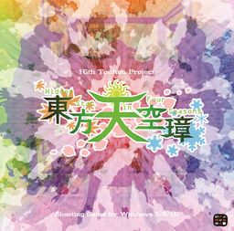

- Welcome to Touhou Wiki!
- Please register to edit. For assistance, check in with our Discord server or IRC channel.
Hidden Star in Four Seasons
Hidden Star in Four Seasons | |
|---|---|
|
 | |
| Developer | |
| Publisher | |
| Released |
Trial: May 7, 2017 (Reitaisai 14) |
| Genre |
Vertical Danmaku Shooting Game |
| Gameplay |
Single-Player Story Mode |
| Requirements |
Steam Version
|
Touhou
Gameplay[edit]
There are four main characters: Reimu Hakurei, Marisa Kirisame, Cirno (with a tan), and Aya Shameimaru. ZUN described his gameplay intentions as an "ordinary STG" with no big twists[2].
Concept[edit]
Story[edit]
Despite it being midsummer, the seasons in various locations are completely out of whack. Hakurei Shrine is showered in cherry petals, the Youkai Mountain is basking in the middle of autumn, and the Forest of Magic is blanketed in snow. To add to that, thanks to some strange force, Gensokyo's fairies are running rampant with unfathomable strength. In the midst of this undeniable incident, the heroine sets out to investigate and confront the perpetrator behind it.
Music[edit]
Press[edit]
Hidden Star in Four Seasons was first announced on ZUN's blog on April 20, 2017. He confirmed playable characters and posted in-development screenshots.
He noted that he was aiming for a "light and refreshing feeling" and would like to "return to [his] roots with something that simply aims to make you feel good to play"[2]. On May 5, ZUN showed the demo CD that would be released at next Reitaisai.
During the 86th edition of the Nikenme Radio show[3] on October 30th, 2017, ZUN announced that a Steam release for the game was planned. This was also mentioned by Tasofro in a blog entry following the show[4].
Gallery[edit]
CD Demo featuring Eternity Larva.
English patch[edit]
Touhou Community Reliant Automatic Patcher / THCRAP
- Community translations from the Touhou Patch Center wiki.
- Select lang_en during patching.
- Video walkthrough
- Also available as a pre-packaged standalone (not recommended).
These patches are a community translation based on Touhou Wiki and the English Touhou Patch Center Portal.
Visit the thpatch game page to find the specific patch contents for Hidden Star in Four Seasons.
References[edit]
- ↑ ZUN (April 20, 2017). "東方Project 第16弾です" (in 日本語).
- ↑ 2.0 2.1 Drake (20 April 2017). "Touhou 16 「東方天空璋(とうほうてんくうしょう) ～ Hidden Star in Four Seasons」 announced". Retrieved 21 April 2017.
- ↑ ZUN (October 30, 2017). "youtube版 ２軒目から始まるラジオ （第86回）" (in 日本語). Retrieved November 1, 2017.
- ↑ 海原海豚 (November 1, 2017). "東方憑依華リリース情報" [Touhou Hyouibana release information] (in 日本語).